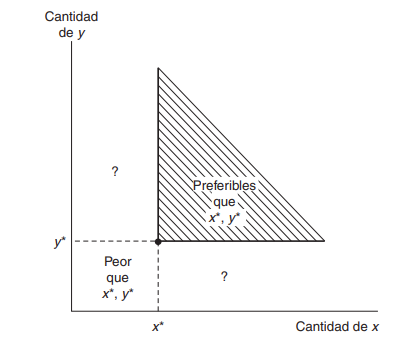
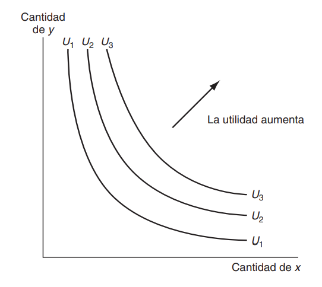

# 1. Primero cargamos las librerias que utilizaremos, en caso que nos las tengas
# instaladas sugiero lo hagas usando install.package("libreria") en su consola
# de Rstudio.
library(ggplot2)
library(ggthemes)
library(tidyverse)
library(plotly)
# 2. Creamos la función de utilidad del ejemplo
utilidad <- function(x,y){
sqrt(x*y)
}
# 3. Creamos una matriz para hacer un bucle en la función de utilidad
valores_matriz <- matrix(0,nrow = 200, ncol = 200)
# 3.1 Llenamos la matriz con usando la función de utilidad
for(fila in 1:nrow(valores_matriz)){
for(columna in 1:ncol(valores_matriz)){
valores_matriz[fila,columna] <- utilidad(fila,columna)
}
}
# 4. Función que nos permitira graficar las curvas de indiferencia
C_indiferencia <- function(entrada_utilidad){
y <- c()
for(i in 1:50){
y_coord <- entrada_utilidad^2/i
y <- c(y,y_coord)
}
data <- data.frame(
x = 1:50,
y = y,
z = rep(entrada_utilidad,50)
)
return(data)
}
# 4.1 Resultado de utilidades obtenidas
lista_utilidades <- lapply(10, C_indiferencia)
full_df <- do.call(rbind, lista_utilidades)Microeconomía Intermedia con R
Utilidad y sus Curvas de Indiferencia
Economía
Microeconomía
R
RStudio
Las Preferencias del Consumidor
Una forma de iniciar el análisis de los individuos es plantear un conjunto básico de postulados, o axiomas, que describen el comportamiento racional del mismo. Supondremos que dadas tres canastas de consumo cualesquiera \((x_1,x_2)\), \((y_1,y_2)\) y \((z_1,z_2)\). El consumidor puede ordenarlas según su atractivo. Es decir, puede decidir que una de ellas es estrictamente mejor que la otra o bien que le son indiferentes.
Utilizaremos la notación:
\(\succ\) Para indicar que una canasta se prefiere estrictamente a otra, es decir, \((x_1,x_2) \succ (y_1,y_2)\).
\(\sim\) Para indicar que al consumidor le resulta indiferente elegir una u otra de las dos canastas de bienes y lo representamos matemáticamente como \((x_1,x_2)\sim (y_1,y_2)\).
\(\succeq\) Para indicar si el individuo prefiere una de las dos canastas o es indiferente entre ellas, decimos que prefiere debilmente la canasta \((x_1,x_2)\) a la \((y_1,y_2)\) y escribimos \((x_1,x_2)\succeq (y_1,y_2)\).
Axiomas de la Teoría del Consumidor
Con base en lo anterior, ya estamos preparados para conocer los tres axiomas de la teoría del consumidor. Decimos que las preferencias son:
- Completas: suponemos que es posible comprar dos canastas cualesquiera, es decir, dada cualquier canasta \(\textbf{X}\) y cualquier canasrta \(\textbf{Y}\), suponemos que \((x_1,x_2)\succeq (y_1,y_2)\) o \((y_1,y_2) \succeq (x_1,x_2)\) o las dos cosas, en cuyo caso el consumidor es indiferente entre las dos canastas.
- Reflexivas: suponemos que cualquier canasta es al menos tan buena como ella misma: \((x_1,x_2)\succeq (y_1,y_2)\).
- Transitiva: si \((x_1,x_2)\succeq (y_1,y_2)\) y \((y_1,y_2)\succeq (z_1,z_2) \Longrightarrow (x_1,x_2)\succeq (z_1,z_2)\). Es decir, si el consumidor piensa que la canasta \(\textbf{X}\) es al menos tan buena como la \(\textbf{Y}\) y que la \(\textbf{Y}\) es al menos tan buena como la \(\textbf{Z}\), piensa que la \(\textbf{X}\) es al menos tan buena como la \(\textbf{Z}\).
Considere que cuando nos referimos a las canastas \(\textbf{X}, \textbf{Y}\) o \(\textbf{Z}\) estamos haciendo referencia a:
\(\textbf{X} = (x_1,x_2)\)
\(\textbf{Y} = (y_1.y_2)\)
\(\textbf{Z} = (z_1,z_2)\)
Si las preferencias no fueran transitivas, podría muy bien haber un conjunto de canastas tal que ninguna de las elecciones fuera la mejor. Sin embargo, en el curso de microeconomía II estamos trabajando bajo el modelo tradicional, donde asumimos que el individuo es razonal, tomando en cuenta que siempre va a preferir mas que menos.
Explicación de los Axiomas
El primer axioma, la completitud, es dificilmente criticable, al menos en el caso de los tipos de elecciones que suelen analizar los economistas. Decir que pueden compararse dos canastas cualesquiera es decir simplemente que el consumidor es capaz de elegir entre dos canasas cualesquiera.
El segundo axioma, la reflexividad, plantea más problemas. Una canasta cualquiera es ciertamente tan buena como una canasta idéntica.
El tercer axioma, la transitividad, plantea más problemas. No esta claro que las preferencias deban tener necesariamente esta propiedad. El supuesto de que son transitivas no parece evidente desde un punto de vista puramente lógico, y, de hecho, no lo es. La transitividad es una hipótesis sobre la conducta de los individuos en sus elecciones y no una afirmación lógica. Sin embargo, no importa que sea o no un hecho lógico básico; lo que importa es que sea o no una descripción razonablemente exacta del comportamiento de los individuos.
¿Qué pensarías de una persona que dijera que prefiere la canasta \(\textbf{X}\) a la \(\textbf{Y}\) y la \(\textbf{Y}\) a la \(\textbf{Z}\), pero que también dijera que prefiere la \(\textbf{Z}\) a la \(\textbf{X}\)? Desde luego, lo consideraríamos como prueba de una conducta particular. Y lo que es más importante, ¿Cómo se comportaría este consumidor si tuviera que elegir entre las tres canastas \(\textbf{X}, \textbf{Y}\) y \(\textbf{Z}\)?
Utilidad
Las preferencias de los individuos están representadas por una función de utilidad de la forma
\[U(x_1,x_2, . . . . , x_n)\]
donde \(x_1,x_2, . . . , x_n\) son las cantidades de cada uno de los n bienes que podría consumirse en un periodo. Esta función es única hasta que la transformación de la misma altere el orden.
En esta representación consideramos que las variables son bienes; es decir, independientemente de las cantidades económicas que representan, suponemos que, dentro de un periodo, los individuos prefieren más de un \(x_i\) particular que menos. Suponemos que esto ocurre con todos los bienes, ya sea un bien de consumo simple, como una hamburguesa, o un agregado complejo, como la riqueza o el ocio.

Siendo honesto con tigo cuando aprendí por primera vez sobre las funciones de utilidad y sus curvas de indiferencia asociadas, se me mostro una figura intimidante que se parecia un poco a la imagen de abajo
Algunas cosas fueron motivo de preocupación inmediato: ¿Por qué hay multiples curvas de indiferencia para una función si solo representa a un consumidor? ¿Por qué se mueven las curvas? Entonces, mientras respondía a mis propias preguntas, pensé que compartir el conocimiento seria útil. Con suerte, este artículo proporcionara una mejor descripción de la que tal vez la mayoría de nosotros haya escuchado y al final comprenderá:
Qué son las curvas de indiferencia y qué representan.
Como se relaciona una restricción presupuestaria con estas curvas de indiferencia y la función de utilidad general.
Como optimizar la utilidad dentro de estas limitaciones (si eres valiente)
Para el alcance de esta publicación, supondré que el lector tiene cierta comprensión fundamental sobre la teoría de la utilidad.
Curvas de Indiferencia
Con base en la definición previa de utilidad, podemos concluir, una función de utilidad es la que explica la cantidad de utilidad que posee un consumidor dado su consumo de dos bienes diferentes. \(x, y\). Una curva de indiferencia es solo una rebanada infenitesimal de esa función que describe todas las diferentes combinaciones entre dos bienes que producen la misma cantidad de utilidad (es decir, a la que una persona sería indiferente).
Supongamos que una persona clasifica las hamburguesas \((y)\) y las bebidas \((x)\) de acuerdo con la función de utilidad
\[ U(x,y) = \sqrt{xy} \]
En el caso de esta función, obtenemos la curva de indiferencia identificando un conjunto de combinaciones de \(x,y\) en el cual la utilidad tiene el mismo valor. Suponga que arbitrariamente decimos que la utilidad tiene un valor de 10. Entonces, la ecuación de esta curva sera:
\[ U(x,y) = 10 = \sqrt{xy} \]Note que si elevamos esta función al cuadrado se mantiene el mismo orden, por lo cual también podemos representar esta curva de indiferencia como
\[ 100 = xy \]
Es importante siempre despejar este tipo de ecuaciones para \(y\) la importancia esta en que será mucho más facil posteriormente encontrar su tasa marginal de sustitución ( en otra sección de esta publicación estudiaremos a detalle esto), entonces, al despejar obtenemos:
\[ y = \frac{100}{x} \]
Para trazar su curva de indiferencia, lo haremos en R , a continuación les muestro como hacerlo. Puedes realizar este ejercicio en tu PC tu mismo.
Ahora si ya estamos preparados para graficar nuestras curvas de indiferencia para \(10 = \sqrt{xy}\)
# 5. Gráfico
ggplot() +
geom_point(data = full_df, aes(x = x, y = y, color = z)) +
geom_path(data = full_df, aes(x = x, y = y, color = z)) +
theme_minimal()+
ylim(0,100) +
labs(x = "Bebidad", y = "Hamburguesas") +
scale_color_continuous(name = "Utilidad")Note que la curva previa representa una utilidad = 10.
A continuación te muestro un grafico animado de la curva de indiferencia previa. Para generar el gráfico presiona el boton PLAY.
Veamos que sucede cuando tenemos diferentes niveles de utilidad, en base al resultado usted puede deducir su propio análisis.
utilidad <- function(x,y){
sqrt(x*y)
}
valores_matriz <- matrix(0,nrow = 200, ncol = 200)
for(fila in 1:nrow(valores_matriz)){
for(columna in 1:ncol(valores_matriz)){
valores_matriz[fila,columna] <- utilidad(fila,columna)
}
}
C_indiferencia <- function(entrada_utilidad){
y <- c()
for(i in 1:100){
y_coord <- entrada_utilidad^2/i
y <- c(y,y_coord)
}
data <- data.frame(
x = 1:100,
y = y,
z = rep(entrada_utilidad,100)
)
return(data)
}
lista_utilidades <- lapply(seq(from =10, to = 60, by = 10), C_indiferencia)
full_df <- do.call(rbind, lista_utilidades)ggplot() +
geom_point(data = full_df, aes(x = x, y = y, color = z)) +
geom_path(data = full_df, aes(x = x, y = y, color = z)) +
theme_minimal() +
ylim(0,200) +
labs(x = "Bebidas", y = "Hamburguesas") +
scale_color_continuous(name = "Utilidad")Aquí podemos señalar lo siguiente:
- A medida que aumenta la utilidad, las curvas se desplazan hacia la derecha y hacia la izquierda a medida que disminuye la utilidad.
- Observe que las curvas se inclinan hacia abajo, esto debe ser necesariamente el caso; a medida que uno aumenta su consumo de bebidas renuncia al otro bien que les era indiferente, hamburguesa.
- Todo lo que está debajo de la curva representa paquetes con menos utilidad. La teoría de la utilidad asume que un consumidor siempre buscará maximizar la utilidad.
- Comprende que la pendiente no es lineal. En genera, cuanto más se tiene de algo, menos utilidad se obtendrá de otra unidad y, por el contrario, más se renunciaría a adquirir el otro bien. Esta pendiente tiene un nombre oficial: Tasa Marginal de Sustitución o TMS hablaremos de esto en una sección posterior.
Pero esas son solo algunas rebanadas que ya he señalado como infinitesimalmente pequeñas.
Para concluir esta sección te dejo un gráfico animado de los diferentes niveles de utilidad, por favor presiona el boton PLAY para que logres verlo.
Tasa Marginal de Sustitución (TMS)
Otro concepto importante en la teoría del consumidor es la Tasa Marginal de Sustitución (TMS). Matemáticamente esto es la pendiente de la curva de indiferencia, sin embargo, en términos microecnómicos esta pendiente se refiere a la relación de cambio entre un bien \(x\) y el bien \(y\), es decir, cuanto del bien x se tiene que sacrificar (aumentar) para aumentar (disminuir) el consumo del bien y para aumentarse en el mismo nivel de utilidad.
En términos matemáticos la TMS se define como:
\[ TMS = -\left.\begin{array}{c}\frac{dy}{dx} \end{array}\right|_{U = U_1} \]
donde la notación indica que la pendiente se debe calcular a lo largo de la cuva de indiferencia \(U_1\).
Un ejercicio interesante para el lector, seria intentar probar la identidad de \(TMS\) que acabamos de definir.
Múltiples Curvas de Indiferencia
Hay una curva de indiferencia que pasa por cada punto del plano \(xy\). Cada una de estas curvas muestra combinaciones de \(x\) y \(y\) que proporcionan al individuo determinado nivel de satisfación como se vio en graficos anteriores. Los movimientos en dirección noreste representan movimientos hacia niveles más altos de satisfación.

Dado que ya conocemos en que consiste la TMS, y a este punto asumo que el lector ya tiene idea de como realizar el computo manual de la TMS para una función de utilidad dada. Entonces, procederemos a realizar el computo de la TMS en R, para el computo se procederá a crear una función que resuelva el problema más rapidamente, ya que como usted se ha podido dar cuenta se necesita y usar calculo diferencial (derivadas).
La función que crearemos para realizar el computo de la TMS la llamaremos TMS, veamos como hacerlo en R.
TMS <- function(fun.utilidad, bien_x) {
U <- parse(text = fun.utilidad)
v1 <- D(U, "x") # D() función que realiza la derivada de U
print(paste("TMS = ",
eval(v1, envir = list(x = bien_x)), "considerando",
bien_x, "unidades del bien x"))
}Del bloque de código previo:
TMS:función que calcula la tasa marginal de sustitución.fun.utilidad: función de la curva de indiferencia (y en función de x). Tiene que especificarse en caracteres.
bien_x:unidades del bien x en donde se evaluara la TMS.
Ejemplo
consideremos la siguiente función de utilidad con su respectivo nivel de utilidad
\[ U(x,y) = 10 = \sqrt{xy} \]
Si calculamos la TMS de esta curva de indiferencia de manera manual tendremos:
\[ TMS = -\frac{\frac{\partial U}{\partial x}}{\frac{\partial U}{\partial y}} = -\frac{100}{x^2} \]
Como se puede dar cuenta la TMS depende de “x”, lo que indica que tenemos que variar “x” positiva o negativamente , con el fin de obtener menos o más de “y” y mantenernos en la misma utilidad de 10.
Si evaluamos la TMS cuando el bien “x” es igual a 5, entonces, la TMS sera de
\[ TMS = -\frac{100}{5^2} = -4 \]
Esto implica, que si aumentamos el consumo del bien “x” en 1 tendremos que disminuir el consumo del bien y en 4. Veamos este ejemplo en R.
# bien_x = 5
# Utilizamos la función TMS que creamos previamente
TMS(fun.utilidad = "100/x", 5)[1] "TMS = -4 considerando 5 unidades del bien x"Note que el resultado es el deseado. Pero si queremos ver como varía la TMS para distintas cantidades del bien “x”, podemos hacer pequeñas variaciones a la función (TMS) que definimos en el primer bloque de código de esta sección.
Var_TMS <- function(fun.utilidad, bien_x){
U <- parse(text = fun.utilidad)
v1 <- D(U, "x")
eval(v1, envir = list(x = bien_x))
}# Veamos el comportamiento de la TMS cuando variamos el bien x
w <- c()
for (i in seq(60, 10, -10)){
t <- Var_TMS(fun.utilidad = "100/x",i)
w <- c(w,t)
}
w[1] -0.02777778 -0.04000000 -0.06250000 -0.11111111 -0.25000000 -1.00000000Veamos que a medida que el bien x pasa de ser abundante a ser un bien escazo cada vez le resulta al consumidor más relevante y si desea obtener una unidad adicional del bien x tendrá que renunciar a más cantidad del bien y. Es así que si el consumidor tiene solo un bien, cambiará este bien siempre y cuando reciba cien unidades del bien y.
En la siguiente sección de este post verá el tema de maximización de la utilidad dado una restricción presupuestaria. Es decir, desarrollamaremos el cálculo óptimo de los bienes, que maximizan la función de utilidad.